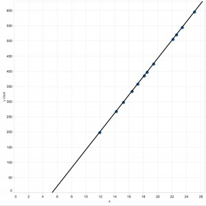
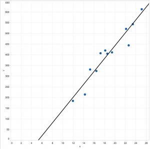
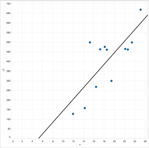
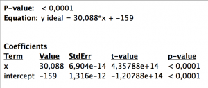
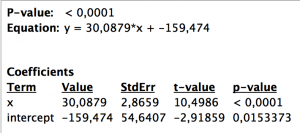
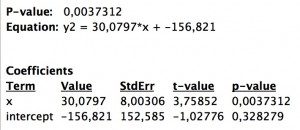

Interacting with your Trend Line in Tableau (Part 1)
Hot topics in the world of Big Data are forecast and trend models, and Tableau has integrated both features. All it takes are two clicks, and a trend line appears – your viz instantly looks more interesting.
The disadvantage of the automatic trend line is the missing interactivity. If an analyst wants to include the trend line in further visualizations, e.g. to quantify and visualise the distance between a data point and the trend line, he/she faces a non-trivial challenge.
The following post will provide a solution to this challenge. It focuses on linear Trend Lines, and its content can be subdivided into three successive parts:
Part 1 : What is a trend line? How to add trend lines to a Tableau chart? What details do Tableau provide about trend lines? What can we derive from the details provided?
Part 2: Two ways to calculate a trend line (=linear regression line, =“Line of Best Fit”):
- Tableau-R Integration
- Calculated fields in Tableau
Part 3: Practical Examples:
- Distance between a data point and the trend line
- “What-if” scenario
PART 1
WHAT IS A TREND LINE?
According to the Bavarian High School Curriculum [1], eighth graders (age 12 -13) will say: The trend line is a linear equation that is described by the formula

x is a member of the set of real numbers (Unicode U+211D: ℝ).
β represents the y-segment, where the line crosses the y-axis; β is also called the ‘Intercept’.
α is the ‘slope’ of the trend line; the slope is a measure how the straight line angles away from the horizontal (some might indicate the slope by using ‘m’ instead of α). The slope of a line can be calculated from any two points on the line. [2]
And both α and β are constants.
Are your memories coming back …?
HOW TO ADD A TREND LINE IN TABLEAU
First of all, we need a viz. Let’s assume we want to know our profit between January 2010 and December 2013 This viz needs [Order Date] on the Column shelf and Profit as SUM([Sales]) on the Row shelf. To obtain a continuous profit line, [Order Date] needs to be changed from discrete to continuous. To include a trend line, open the Analysis menu, hover over “Trend Lines” and choose “Show All Trend Lines”. Done (see Figure 1).
Figure 1: Tableau chart showing profit over time.
WHAT STATISTICAL DETAILS ABOUT THE TREND LINE DOES TABLEAU PROVIDE?
Tableau offers three levels of detail. Each level of detail provides the formula used to calculate the trend line as well as an increasing amount of statistical details. Please don’t worry; we’ll discuss only the most important statistics!
LEVEL 1:
While hovering above the trend line, a little pop-up window opens (Figure 2). Tableau shows the linear equation, as we have known it since school days. The equation provides the values for the coefficients (slope & intercept).
Figure 2: Level 1 statistical details describing the trend line.
In a second line, the analyst is provided with the p-value (probability value). The p-value is a function of the observations in our data set and indicates how likely it is that the observed trend happened by chance or is indeed a reliable trend. In other words, if we collected data again (under the same conditions) how likely – or not –is it that we get a similar trend (for details on the p-value, read [3])?
The smaller the “p-value”, the more likely it is that the conclusions inferred from the current observation are reliable. Convention has it that the threshold value for accepting or rejecting the outcome as (more or less) random is traditionally 5% or 1% (called the significance level of the test [3]).
Our p-value is very small (p < 0.0001), which means the upward trend in profit is a reliable result.
LEVEL 2:
Tableau offers some more details when we right-click on the Trend Line and choose “Describe Trend Line”. Again, we see the p-value and the linear equation just like before in Figure 2 . Additionally, we see some more statistical indicators (Figure 3).
Figure 3: Level 2 statistical details describing the trend line.
Most interesting is the standard error (StdErr). While the p-value is similar to a Boolean (yes/no) – above or below a chosen threshold – the standard error is a kind of accuracy measure for the trend line’s predictions/estimates.
What does “kind of accuracy measure” actually mean?
Let’s assume all our observations (= data points) lie on a straight line (Figure 4, A) with the slope = 30.088 and intercept of = -159. This data results in a p-value << 0.05 (or 0.01), so we can say ‘the upward trend is reliable’. Because the data lie ON the line, in other words they do not deviate from it, the standard error StdErr = 0. We call this a “perfect correlation” between two measures.
In real life, however, data is rarely perfectly aligned, which is why we need to estimate a trend line. This estimate is based on two aspects:
- The trend line should be as close as possible to all observations in the two-variable scatter plot.
- The number of observations above the trend line should be equal to the number of observations below the trend line.
Due to these requirements, the trend line is also referred to as “Line of Best Fit”, and the mathematical approach to calculate the “Line of Best Fit” is called the “least squared” method [4].
In Figure 4, graphs B and C have nearly identical trend lines: However, in B, all observations are close to the trend line, while in C, observations are more scattered. In statistical terminology: with identical sample size in Graph B deviations are small compared to deviation deviations from the trend line in Graph C. Neither p-value nor coefficients tell us much, but the StdErr [5a] speaks loudly: C has a StdErr three times the size of B. Hence you might want to check out why observations are so scattered in C and possibly whether there is a better way to analyse the data.
Note: If you are not sure whether you the difference between standard deviation and standard error you could start with reading James Dean Brown nice overview [5b].
| A | B | C |
|  |  |  |
|  |  |  |
Figure 4: Two-variable scatter plot with Trend Lines and statistical details.
LEVEL 3:
Tableau offers still another level of detail. You’ll find it when right-clicking on the trend line and choosing “Describe Trend Model”. Don’t worry; it’s not as bad as it looks.
First, look at the bottom of Figure 5. There, you’ll find our well-known coefficient values, i.e. the slope = 30.0879 and the intercept = -159.474 as well as the StdErr = 2.8659 and p-value <0.0001. What is confusing for many people is the way the equation is presented:
Figure 5: Level 3 statistical details describing the Trend Line in Fig 4B.
Mathematically, the formula
y = (x + intercept)
seems to suggest that when including the slope, the equation looks like:
y = slope * (x + intercept) = slope* x + slope * intercept.
However, this is not what Tableau wants to say. Do not ask me why the equation is not presented in the same format as in Levels 1 and 2; it’s just the way Tableau decided to build it. But please be assured: All equations on all three levels aim to express the very same [6].
Now go to part 2: Interacting with your trend line in Tableau part 2.
References
[1] http://www.isb-gym8-lehrplan.de/contentserv/3.1.neu/g8.de/index.php?StoryID=27110
[2] http://www.schulminator.com/mathematik/lineare-funktion
[3] http://www.nature.com/news/scientific-method-statistical-errors-1.14700
[4] http://hotmath.com/hotmath_help/topics/line-of-best-fit.html
[5a] http://onlinestatbook.com/2/regression/accuracy.html
[5b] http://jalt.org/test/PDF/Brown4.pdf


Posted in: Blog
Leave a Comment (1) → English
English{kind=link}
{kind=link}
{kind=link}
{kind=link}
{kind=link}
{kind=link}
{kind=link}
{kind=link}
{kind=link}
{kind=link}
{kind=link}